GAYA MAP ANIMATION · 1080×1920 · ~43 s (VO 1.15×) · subtitle jalur bawah · data IMF/WGC Q3 2026 · tanpa karikatur
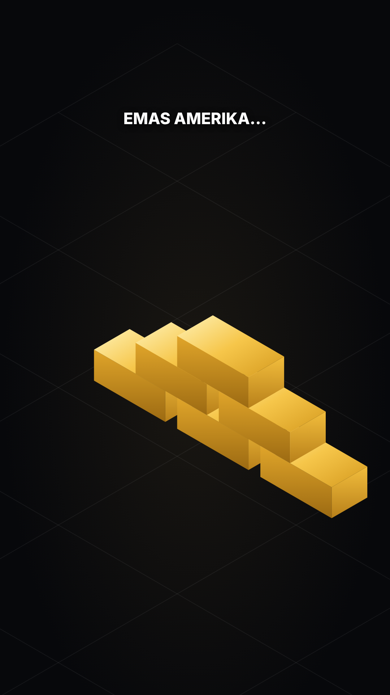
0:00 "Kalau semua emas Amerika…" timbunan jongkong, kamera dekat
›
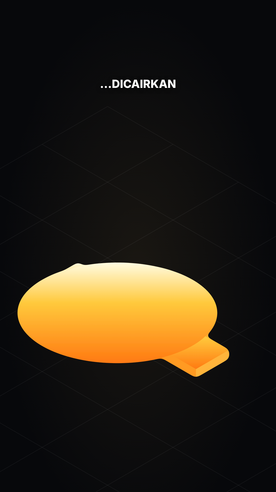
0:01 "…dicairkan" jongkong menyala oren, cair jadi lopak
›
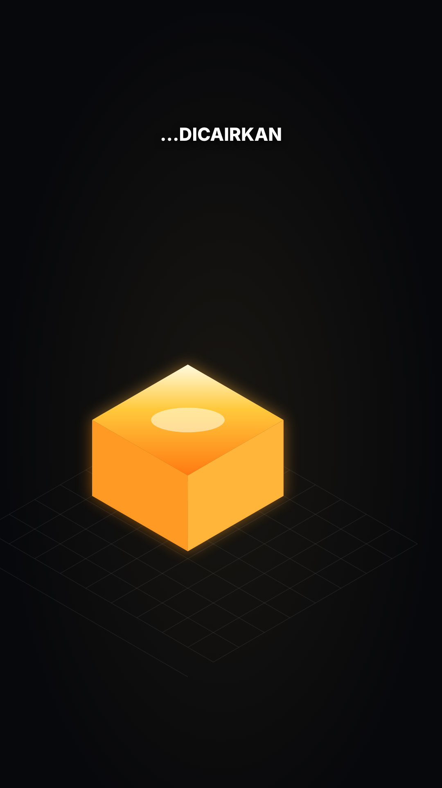
0:02 emas cair naik jadi kiub, kamera tarik keluar
›
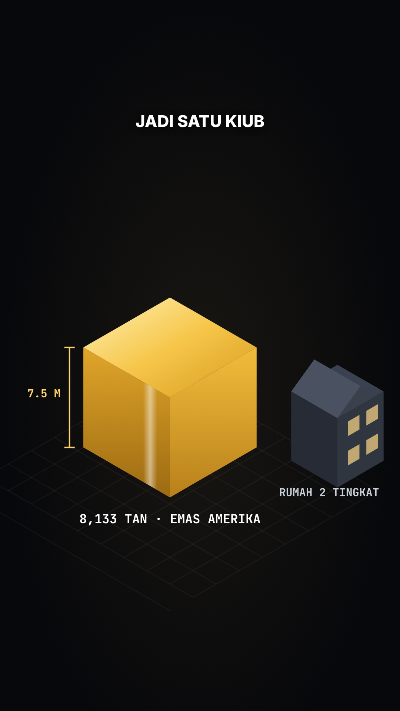
0:03 "…lebih dari bangunan dua tingkat" kiub keras berkilat, 7.5 M, rumah 2 tingkat
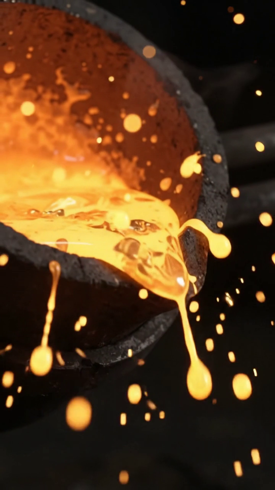
0:00 "Kalau semua emas Amerika…" klip AI emas cair dituang, skrin penuh, label ILUSTRASI · AI
›
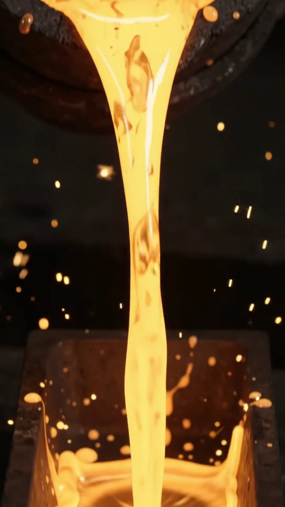
0:01 "…dicairkan" aliran emas jatuh ke acuan, percikan api
›
0:02 potong (kilat putih) ke animasi: emas naik jadi kiub
›
0:03 kiub 7.5 M sebelah rumah 2 tingkat, "8,133 TAN · EMAS AMERIKA"
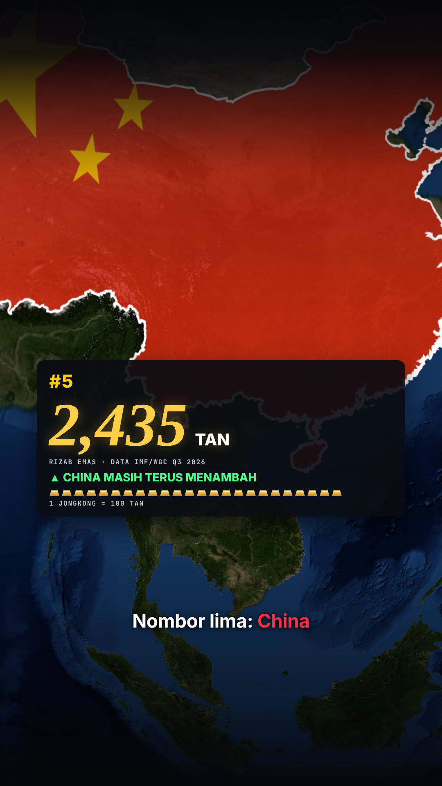
1 · #5
China 2,435
"China masih terus menambah" (anak panah hijau naik), 24 jongkong
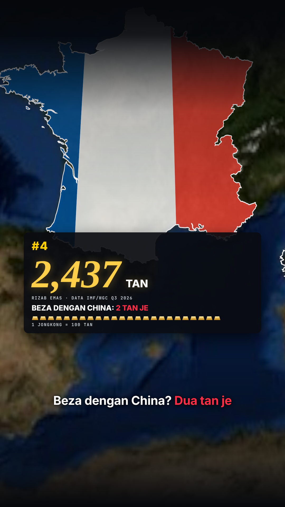
2 · #4
Perancis 2,437
"BEZA DENGAN CHINA: 2 TAN JE"
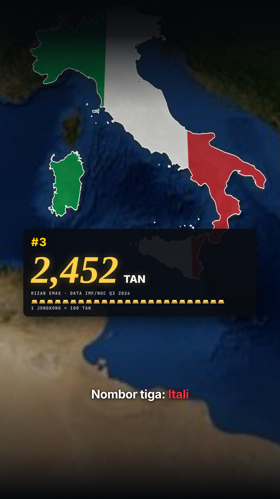
3 · #3
Itali 2,452
bendera Itali isi negara, 25 jongkong
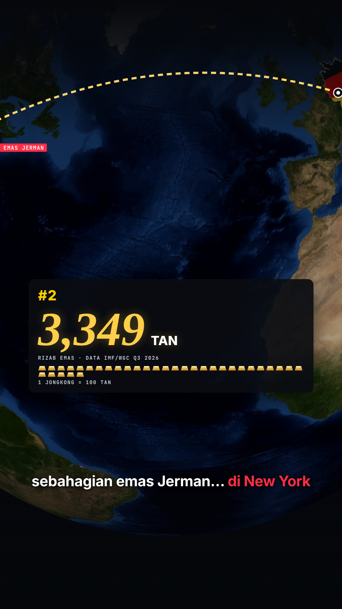
4 · #2
Jerman 3,349
garisan Frankfurt → New York, pin "SEBAHAGIAN EMAS JERMAN"
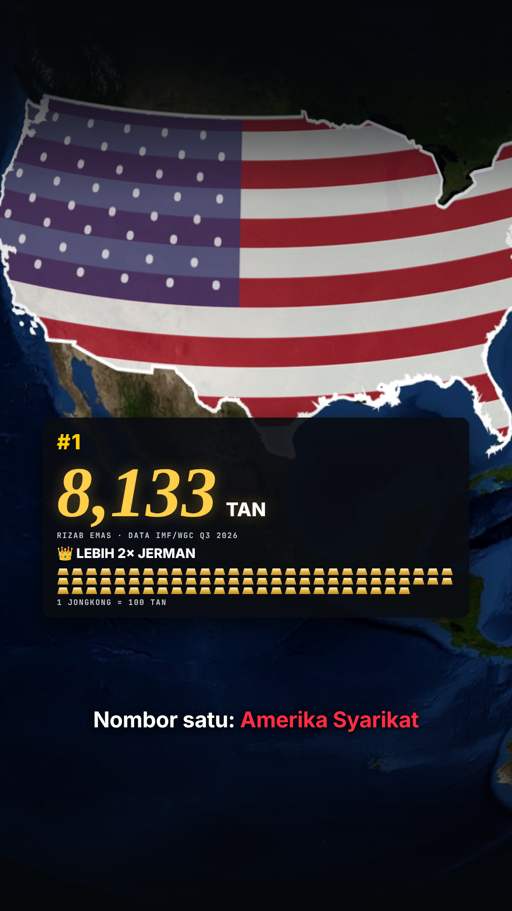
5 · #1
AS 8,133
81 jongkong memenuhi kad, "LEBIH 2× JERMAN"
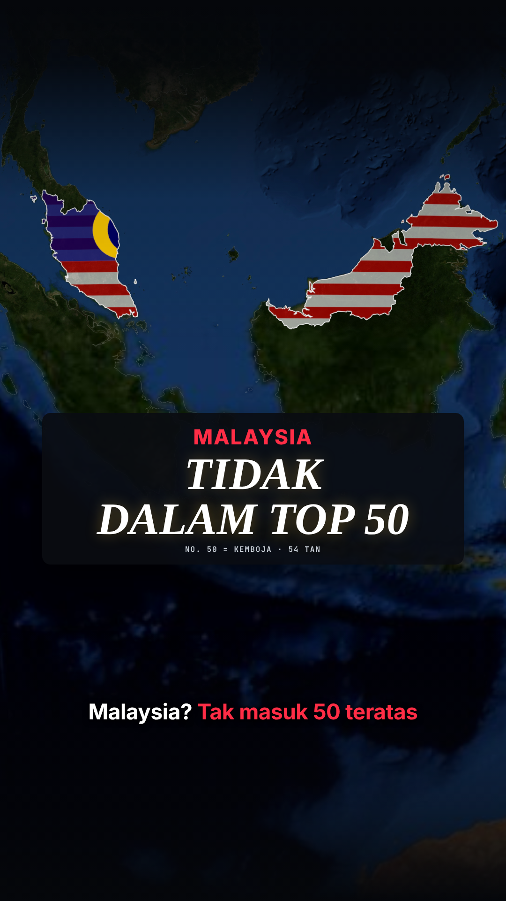
6 · Malaysia
Tak masuk top 50
bendera Malaysia, "NO. 50 = KEMBOJA · 54 TAN"
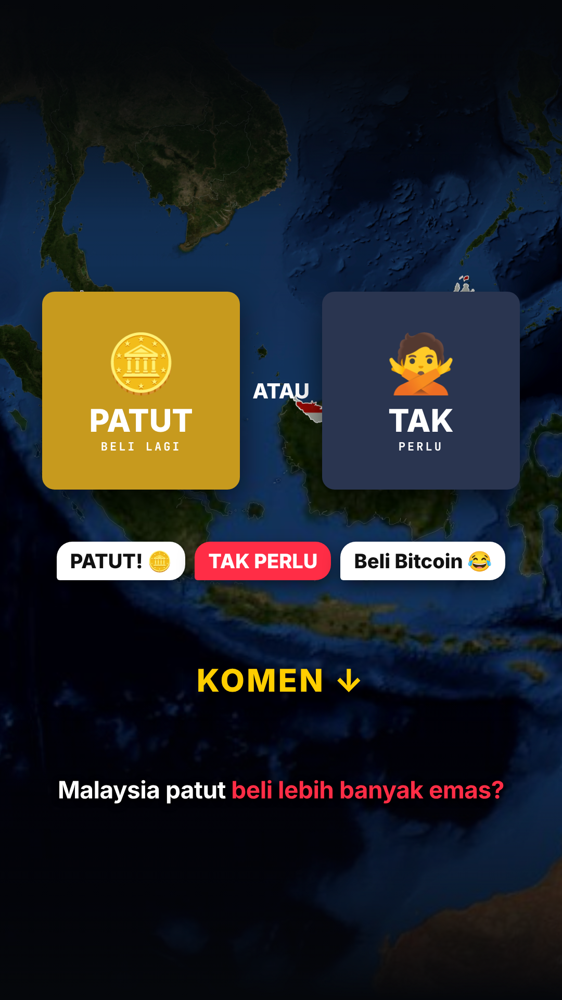
7 · Komen
PATUT vs TAK PERLU
dua butang, gelembung komen, KOMEN ↓, outro